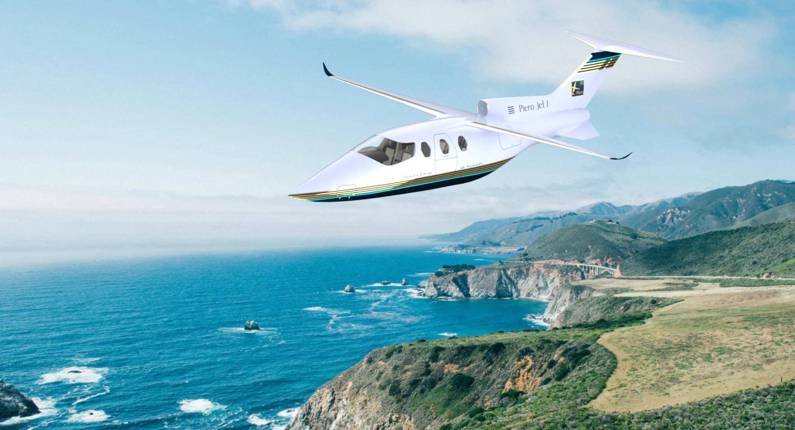
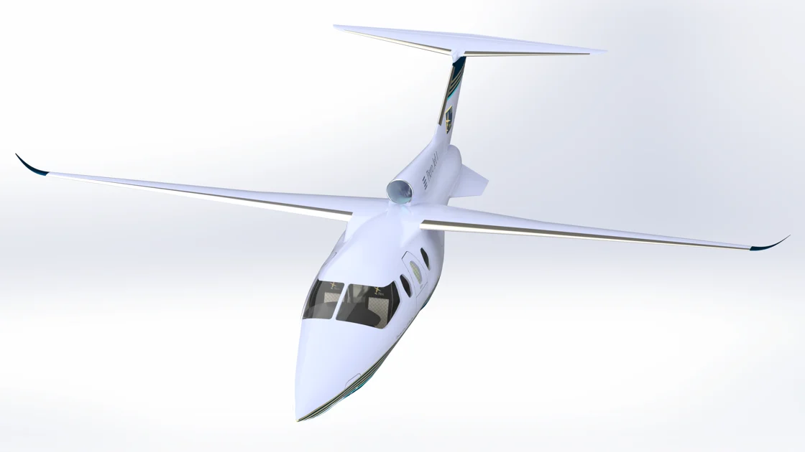
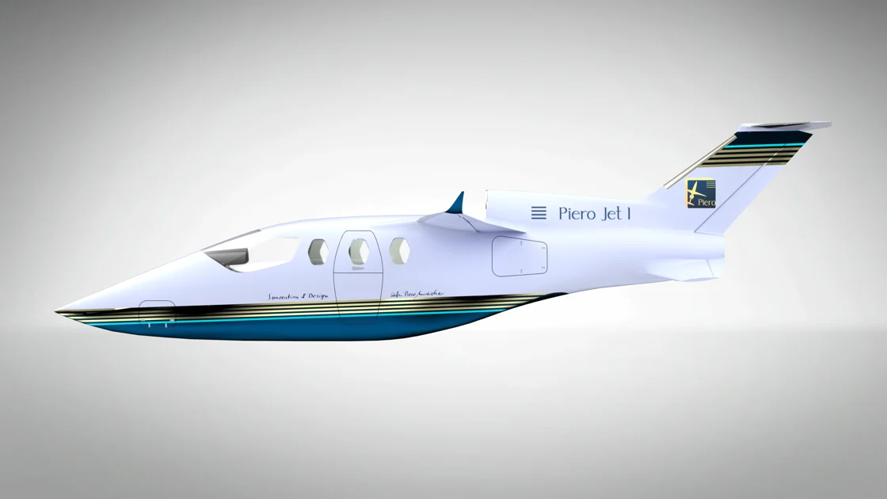

Aeronautical engineer
Rawad
Al Harake
At Piero, I model the surfaces of business jets. At the University of Balamand, I use computational fluid dynamics to study how air moves and carries heat.
Explore the aircraftOn my desk
Choose a workspaceAircraft hangar
Piero Jet I
My work with Moving Terrain AG on the Piero series takes a wing from its airfoil sections to a continuous exterior surface in SolidWorks.



Exterior inspector
Look around the airframe
Wing geometry
This view follows the leading edge from root to tip. In CAD, each airfoil section helps define the surface that runs between them.
Fuselage profile
From the side, you can trace the outline of the nose, cabin and belly. The wing root disappears into that continuous shape.
Aft surfaces
From behind, the tailplane, fin and small strakes resolve into separate surfaces. Their arrangement is much easier to read from this angle.
I model airfoils, wings and exterior components as part of the aircraft design team. The gallery shows the team’s aircraft.
Flow bench
A cylinder off centre
A heated cylinder sits inside a cooled square enclosure tilted by 45°. Our published study asked how much its position changes heat transfer through the air.
Experiment geometry
Move the heat source
The slider changes the geometry in this schematic. In the simulations, the average Nusselt number varied nonlinearly with cylinder position.
I helped develop the CFD methodology, curated simulation data and visualized how cylinder position and Rayleigh number affected the results.
Read our thermofluids paperMSc research · In progress
Flapping-wing aerodynamics
For my MSc, I’m studying airflow around an insect-scale flapping wing. I compared a dry-wing CFD model with a published benchmark, checking lift, drag, circulation and flow structure across the stroke. Li & Nabawy’s benchmark study
Paper library
Selected publications
My co-authored work spans natural convection, solar drying and thermal storage in buildings.
- 2026Journal article
Natural convection heat transfer from an eccentric circular cylinder inside a 45° tilted square enclosure
M. Daaboul, R. Samrout, R. Harake, M. Sabat, C. Lahoud
International Journal of Thermofluids · 35, 101669
- 2026Journal article
Performance assessment and numerical simulation of Beechwood solar drying in Lebanon: a parametric approach
S. Youssef, C. B. Lahoud, M. Fatfat, R. Al Harake
Management of Environmental Quality · 37(3), 729–753
- 2025Journal article
Enhancing Energy Efficiency in Mediterranean Large-Scale Buildings: A Study on Mobilized Thermal-Energy-Storage Systems
C. Lahoud, R. Harake, M. Fatfat, S. Bazi
Buildings · 15(3), 464
- 2025Conference paper
Evaluating Optimal PCM Integration in Building Envelopes Across Lebanese Regions
C. Lahoud, R. Harake, M. Fatfat, J. Harmouche, J. Kesserwani, S. Youssef
7th International Conference on Renewable Energy for Developing Countries · REDEC
Engineering logbook
How I got here
I’ve worked on aircraft in a maintenance hangar, designed bodywork for a student race car and checked stresses in cabin structures. Each gave me a different way to look at an engineering drawing.
Experience
Open an entry to read about the work.
January 2025 – presentAircraft designMoving Terrain AG · Piero
Modeling airfoils, wings and exterior components for the Piero aircraft series.
September 2024 – presentResearch assistantUniversity of Balamand
Modeling solar drying in MATLAB, investigating phase change materials in buildings and studying natural convection with CFD.
April – October 2026FEA stress engineerFTMSolutions
Assessed loads, displacements and stresses in aircraft cabin interiors and prepared structural substantiation reports.
July 2024 – May 2025AerodynamicistBalamand Racing Team
Designed and optimized bodywork components for the university’s Formula Student UK team.
June – August 2023Aircraft maintenance internLebanese Air Force
Supported hands-on aircraft maintenance and safety work.